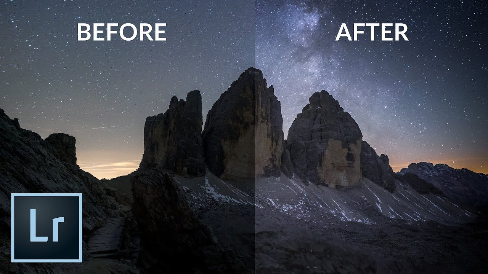
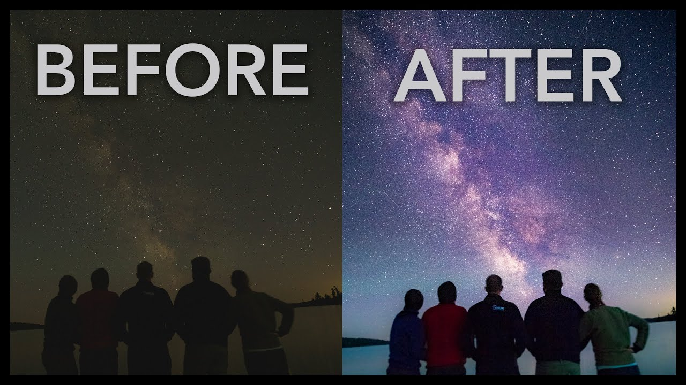
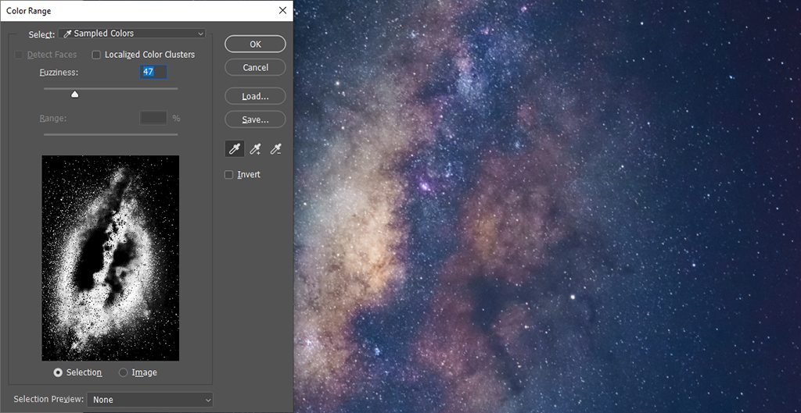
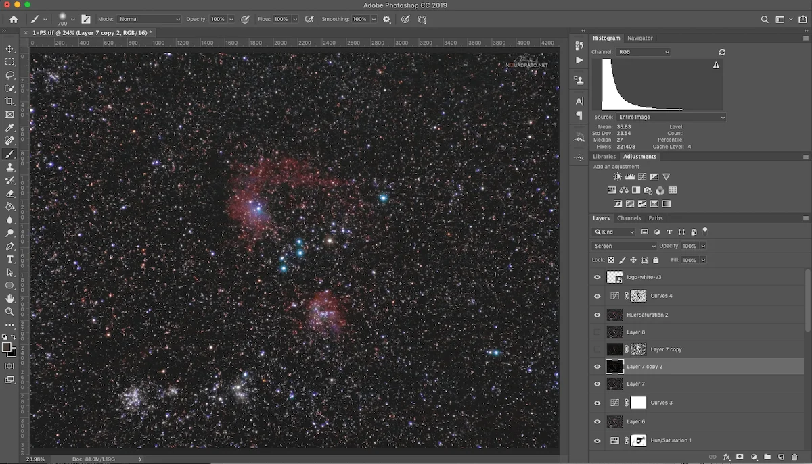
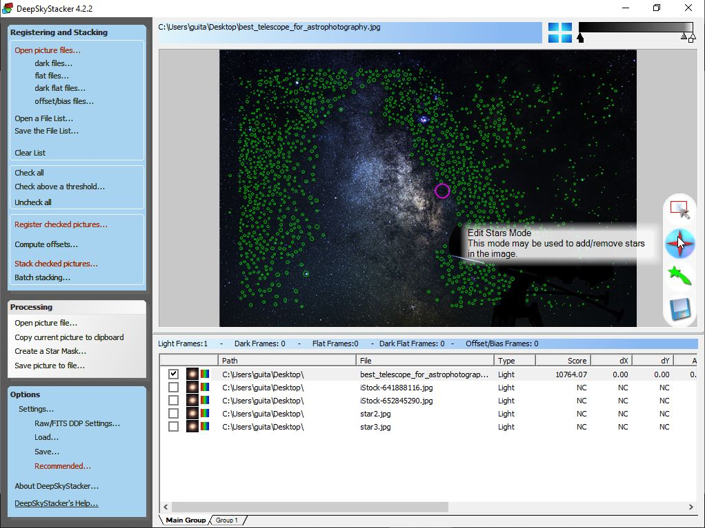
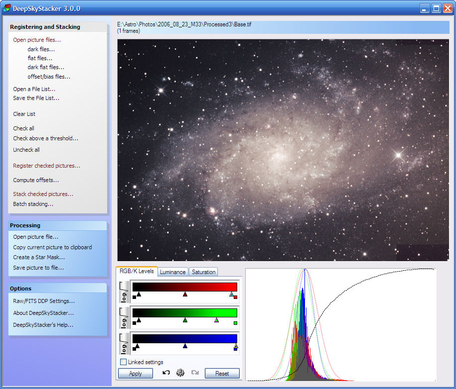

One of the standout features of Lightroom is its comprehensive set of editing tools. From basic adjustments like exposure, contrast, and color correction, to more advanced features such as selective adjustments, spot healing, and noise reduction, Lightroom offers a wide range of powerful tools that enable me to fine-tune my photos with precision. The non-destructive editing capability of Lightroom is also a game-changer. It allows me to make edits to my photos without altering the original image file, which means that I can always go back to the original if needed. This flexibility gives me peace of mind and creative freedom to experiment with different editing styles. The organization and management features of Lightroom are also top-notch. The ability to create and manage collections, keywords, and metadata makes it easy for me to keep my photos organized and searchable. The integrated file management system also allows me to easily import, export, and backup my photos, ensuring that my image library is well-organized and secure. Furthermore, Lightroom's seamless integration with Adobe Photoshop and other Adobe Creative Cloud applications is a huge advantage. This allows me to easily switch between Lightroom and Photoshop for more advanced retouching or compositing work, without losing any of the adjustments or settings made in Lightroom. Overall, Adobe Lightroom is a powerful, user-friendly, and versatile photo editing application that has significantly improved my post-processing workflow. I highly recommend it to any photographer who wants to take their image editing to the next level and achieve professional-quality results.
 I can confidently say that it is a remarkable photo editing application that I absolutely adore. This software has become an essential tool in my photography workflow, empowering me to bring my creative vision to life and achieve stunning results. One of the most notable features of Photoshop is its unparalleled versatility. From basic adjustments like cropping and resizing, to advanced retouching, compositing, and manipulation, Photoshop offers a vast array of powerful tools that allow me to transform my photos in countless ways. The precision and control that Photoshop provides are unparalleled, enabling me to achieve pixel-perfect edits and create visually captivating images. The extensive range of editing features in Photoshop is truly impressive. The layers and masks functionality allows for non-destructive editing, giving me the flexibility to make adjustments without permanently altering the original image. The wide selection of brushes, filters, and effects provide endless creative possibilities, allowing me to add artistic touches or enhance specific areas of my photos with ease. Furthermore, Photoshop's integration with other Adobe Creative Cloud applications, such as Lightroom, is a major advantage. This seamless integration allows me to easily switch between applications and leverage the strengths of each for a comprehensive and streamlined editing workflow. The constant updates and improvements to Photoshop also demonstrate Adobe's commitment to delivering a cutting-edge software for photographers and creative professionals. The regular addition of new features and enhancements keeps Photoshop at the forefront of the industry, ensuring that I always have access to the latest tools and capabilities. Overall, Adobe Photoshop is a powerful, versatile, and industry-leading photo editing application that has greatly elevated my photography and creative work. I highly recommend it to any photographer or creative professional who seeks ultimate control, precision, and endless creative possibilities in their image editing process.
 This software has become an invaluable tool in my astrophotography workflow, allowing me to stack and process multiple astronomical images to create stunning deep sky photos. One of the standout features of DeepSkyStacker is its ability to align and stack multiple images to produce a single, noise-reduced, and detail-enhanced result. This stacking process allows me to capture more light and extract finer details from my astrophotos, resulting in cleaner and more detailed images of galaxies, nebulae, and other celestial objects. The intuitive and user-friendly interface of DeepSkyStacker makes it easy to navigate and use, even for those who are new to astrophotography. The step-by-step workflow guides me through the entire stacking process, from loading and aligning images, to calibrating and integrating them into a final stacked result. The software also provides various options for image calibration, alignment, and stacking settings, allowing me to customize the process to suit my specific needs. DeepSkyStacker also offers advanced features such as batch processing, image weighting, and background extraction, which provide further control and flexibility in my astrophotography workflow. The ability to save and load stacking settings allows me to easily replicate my preferred stacking parameters for different image sets, saving me time and effort in post-processing. Furthermore, DeepSkyStacker supports a wide range of file formats and is compatible with popular astrophotography cameras, making it a versatile tool for processing images captured with different cameras and telescopes. The software also integrates well with other astrophotography software and workflows, allowing for seamless integration into my overall image processing pipeline. Overall, DeepSkyStacker is a powerful and reliable software for astrophotography, providing me with the tools and capabilities I need to create stunning deep sky images. I highly recommend it to any astrophotographer who wants to improve their image stacking and processing workflow and achieve breathtaking results in their space photography.
 